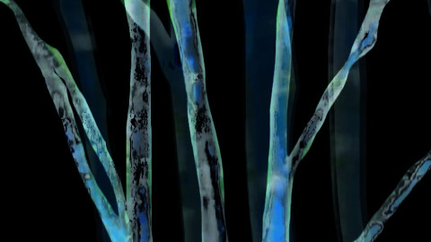

Georg Gaigl

Georg Gaigl * 1968 in Erding. Studium an der
Akademie der Bildenden Künste, München. Neben den Ausstellungen
realisiert Gaigl Video-Performances, darunter beim ABC-Festival
Augsburg, Sound of Noise Festival Dornbirn, Donaufestival Krems, im
Deutschen Literaturarchiv Marbach, der Kunsthalle Bozen und der
Österreichischen Vertretung, New York.
www.georggaigl.de
Ausstellungen (u.a.): c.art, Dornbirn (AT) 2013 – Orangerie, München 2016 – Galerie Robert Widmann 2017
3 miniaturen
2015/2016 – Video, Sound – 6'
Konzept: Georg Gaigl – M: Hans Platzgumer – Weitere
Beteiligung: Albert Ostermaier (Schriftsteller), Michael Höpfner
(Fotokünstler) – Album bei Konkord Wien
Das Videoprojekt „miniaturen“ basiert auf der Werkserie aus zwanzig
Miniaturen des Musikers und Schriftstellers Hans Platzgumer. Georg
Gaigl greift die Atmosphären und Stimmungen der musikalischen
Miniaturen auf und nimmt sie zum Anlass, eigene surreale
Traumsequenzen zu erstellen.
„Alle Miniaturen sind wie Singles. Die zusammenpassen.“ – Hans
Platzgumer